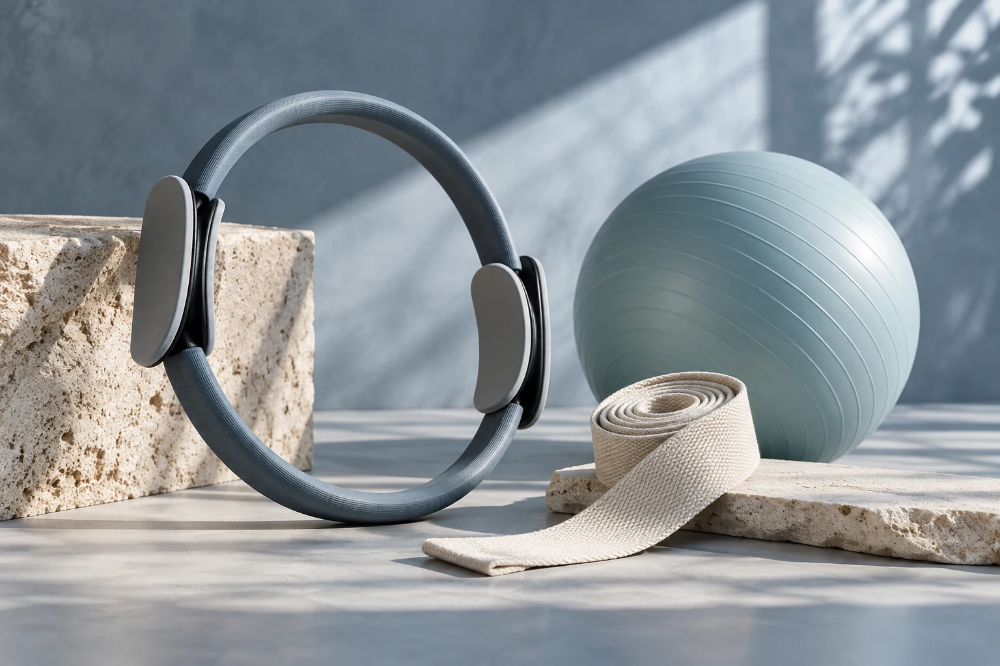

Pilates
Explore uma prática de movimento e pergunte sobre formatos, horários e nível de experiência.
CUIDADO INDIVIDUALPilates · Fisioterapia · Funcional · Centro
Pilates, fisioterapia e treinamento funcional ajudam você a encontrar novas formas de se movimentar. Converse com a equipe e escolha por onde começar.

03 · SOBRE O PROFISSIONAL
Encontre uma atividade que combine com seus objetivos e seu momento.
Se você quer se movimentar mais, ganhar condicionamento ou buscar acompanhamento para uma necessidade específica, conheça as opções da Animus. A equipe pode informar quais formatos e horários fazem sentido para você.
Antes de escolher, conheça também as avaliações públicas no Google: nota 5,0 em 122 avaliações. Converse com a equipe sobre a sua necessidade.
04 · COMO PODEMOS AJUDAR
Três possibilidades para conversar com a equipe e encontrar um formato adequado ao que você procura.
Explore uma prática de movimento e pergunte sobre formatos, horários e nível de experiência.
CUIDADO INDIVIDUALConverse sobre sua necessidade e entenda como funciona a avaliação fisioterapêutica.
ORIENTAÇÃO PROFISSIONALPergunte sobre atividades, objetivos e opções para integrar movimento à sua semana.
PARA A SUA ROTINAA equipe ajuda você a conhecer atividades, horários e opções para seus objetivos.
FALE CONOSCO05 · BENEFÍCIOS PARA VOCÊ
Converse sobre avaliação, objetivos e atividades importantes para você.
Pilates, fisioterapia e treinamento funcional em um só lugar.
Nota 5,0 em 122 avaliações no Google. Ambiente e equipe estão entre temas mencionados.
Consulte as condições de acesso da unidade e planeje sua visita.
06 · COMO COMEÇAR
Uma conversa ajuda a entender as opções e escolher o próximo passo para você.
Fale sobre sua rotina e os movimentos ou atividades que deseja retomar.
Confirme como funciona a consulta e quais opções podem ser consideradas.
Consulte agenda, valores e endereço e combine seu próximo passo.
07 · PERTO DE VOCÊ
Visite o atendimento em Centro, Nova Lima. Consulte a rota e confirme o melhor horário antes de sair.
R. Dr. Aníbal Moraes Quintão, 36 - Centro, Nova Lima - MG, 34000-081, BrasilVer rota no Google Maps08 · DÚVIDAS FREQUENTES
Converse sobre o que está sentindo. A avaliação profissional ajuda a entender quais opções podem ser adequadas.
Pergunte como é o primeiro atendimento e quais informações ou exames podem ser úteis.
Consulte valores e condições diretamente com a profissional.
Ligue para conferir horários, endereço e orientações para a consulta.
09 · FALE CONOSCO
Fale com a Animus Clínica para consultar horários, formatos e valores de Pilates, fisioterapia e treinamento funcional.